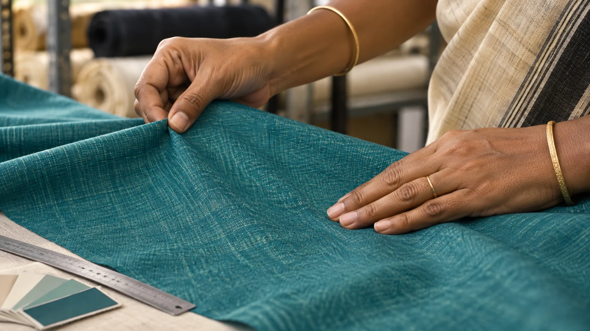
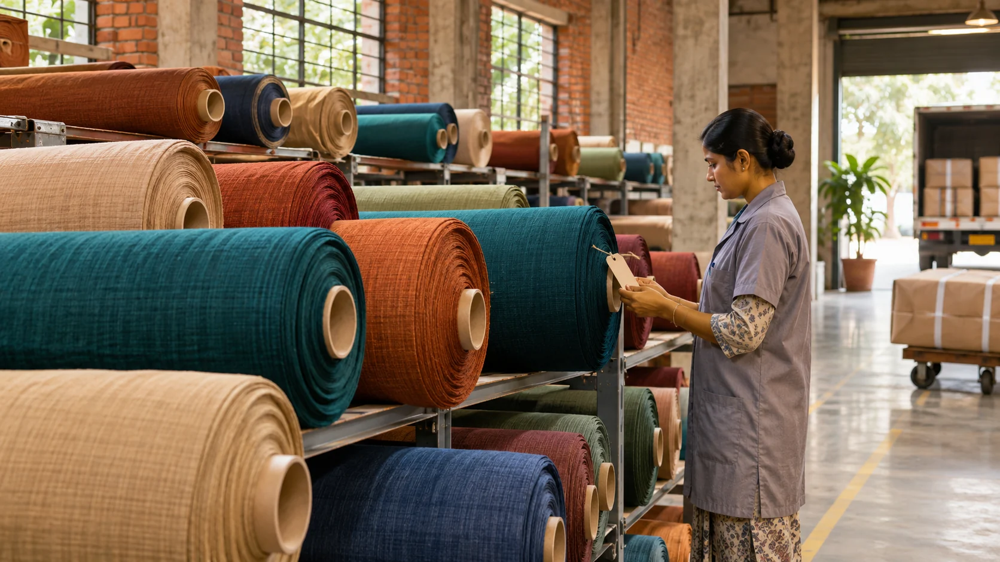

Textile finishing
Finishing work for man-made and blended textile materials, aligned to the requirement agreed for each enquiry.
Katni, Madhya Pradesh
Focused finishing for man-made and blended textiles, backed by attentive inspection and a clear, responsive way of working.
Udyam-registered micro enterprise
Manufacturing activity
Man-made & blended textiles
Katni, Madhya Pradesh
What we do
A focused textile partner
Mehar Foundation is a textile manufacturing enterprise based in Katni. Our registered activity is the finishing of man-made and blended textiles—work that calls for a close eye on surface, consistency and presentation.
We keep the conversation direct: understand the requirement, review the material, complete the agreed finishing work and inspect the result before dispatch.
See how we work
Attention at fabric level
“Consistency is built one careful check at a time.”
Our working approach is grounded in visual attention, practical communication and respect for the material entrusted to us.
Core capability
Clear scope, careful handling and visible quality checks form the centre of every requirement we take on.
Finishing work for man-made and blended textile materials, aligned to the requirement agreed for each enquiry.
A practical review of surface and presentation helps identify visible variation before finished material moves ahead.
Finished material is organised for an orderly handover, supported by direct coordination with the customer.
Our working path
A simple four-step flow keeps expectations clear and communication moving.
Tell us about the fabric, quantity, intended outcome and timeline.
We review the material and align on the workable finishing scope.
The agreed work is carried out with attention to handling and consistency.
The finished material is visually checked and prepared for collection or dispatch.
Material focus
Our official industry classification is specific. That focus gives customers a clear starting point when discussing their material and finishing requirement.

About Mehar Foundation
Mehar Foundation began business operations in April 2021 and is registered as a micro enterprise under India’s Udyam system. The enterprise operates from Katni district in Madhya Pradesh.
Its registered manufacturing activity is the finishing of man-made and blended textiles. This website presents that capability to buyers, partners and businesses looking for a direct point of contact.
Start a conversation
Share a few practical details and we’ll continue the conversation directly.